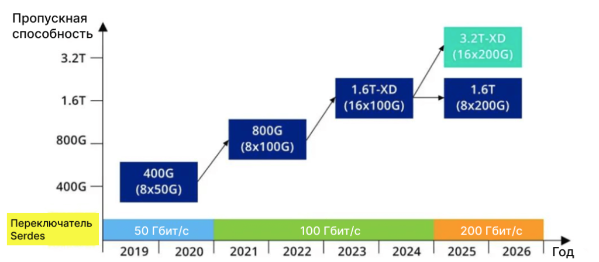
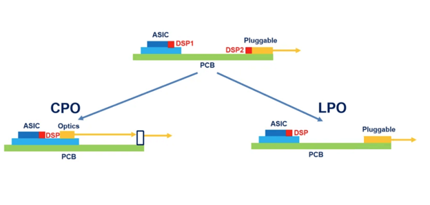
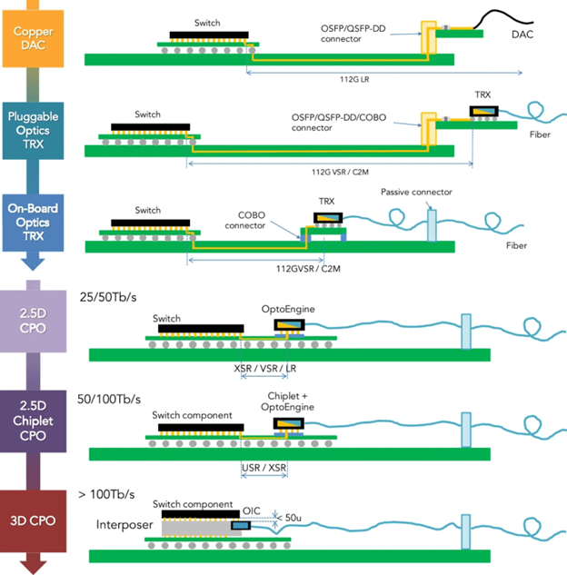
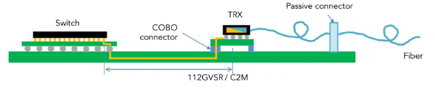
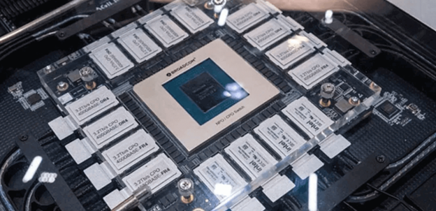
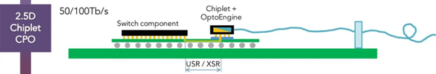
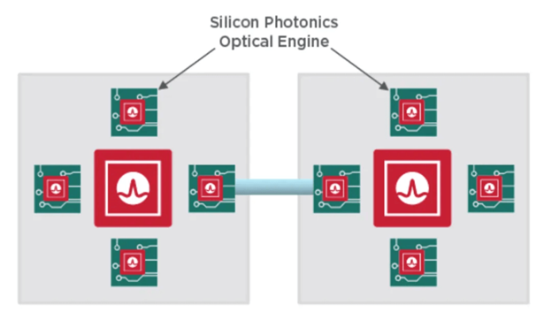
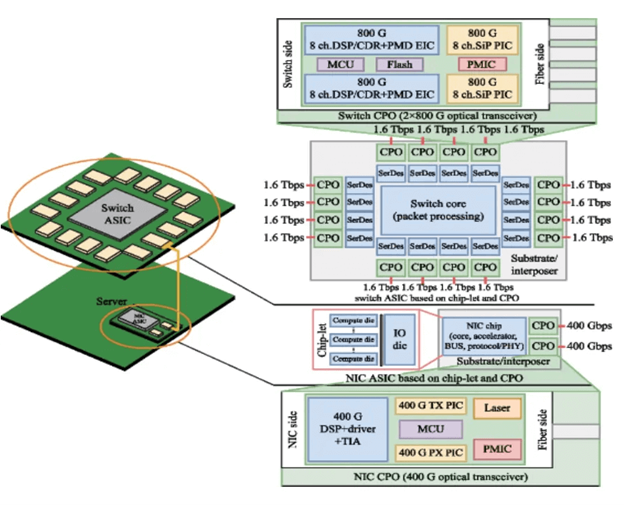
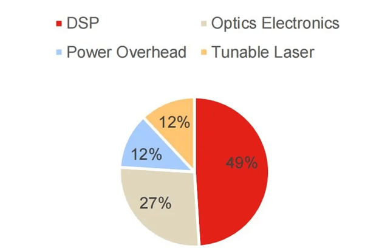

Офис продаж:
Офис продаж:
 8 (800) 551-08-59
8 (800) 551-08-59
 Личный кабинет
Личный кабинет


В чём разница между CPO и LPO
10.09.2025В чём разница между CPO и LPO
Традиционные оптические модули функционируют независимо от переключающих ASIC и соединяются с другими электронными компонентами через медные кабели или оптоволокно. Такой способ подключения часто приводит к значительным затратам энергии и потерям сигнала при передаче данных на высоких скоростях. Особенно важно отметить, что с увеличением скорости сети с 400G до 800G и даже до 1.6T, и с прогнозами о том, что она скоро достигнет 3.2T, проблема потребления энергии становится всё более актуальной.

Потребляемая мощность модулей SFP составляет приблизительно 2 Вт, тогда как оптические модули 100G
имеют мощность в диапазоне от 1.5 до 3 Вт. Для оптических модулей 400G потребление может достигать
12 Вт, а модули 800G варьируются от 12 до 16 Вт.
С ростом скорости передачи данных энергопотребление отдельных оптических модулей пропорционально увеличивается, что приводит к значительному росту общего потребления энергии системы.
С точки зрения конструкции устройства, при удвоении скорости сигнала с 56 Гбит/с до 112 Гбит/с, потери на дорожках печатной платы, даже с применением современных материалов, также увеличиваются почти вдвое для заданной длины.
Обычно, чем короче электрический канал и чем меньше переходов (таких как разъемы и переходные отверстия), тем проще решать задачи, связанные с целостностью сигнала. Это способствовало тенденции размещения оптических компонентов ближе к ASIC, что позволяет эффективно снижать энергопотребление.
С ростом скорости передачи данных энергопотребление отдельных оптических модулей пропорционально увеличивается, что приводит к значительному росту общего потребления энергии системы.
С точки зрения конструкции устройства, при удвоении скорости сигнала с 56 Гбит/с до 112 Гбит/с, потери на дорожках печатной платы, даже с применением современных материалов, также увеличиваются почти вдвое для заданной длины.
Обычно, чем короче электрический канал и чем меньше переходов (таких как разъемы и переходные отверстия), тем проще решать задачи, связанные с целостностью сигнала. Это способствовало тенденции размещения оптических компонентов ближе к ASIC, что позволяет эффективно снижать энергопотребление.
На основе этого подхода были разработаны два основных решения:
Совместно упакованная оптика (CPO): оптические и электрические компоненты интегрированы в одном корпусе.Линейная фотонная оптика (LPO): подключаемые модули с линейными оптическими приводами. Эволюция от подключаемых модулей к CPO и LPO проиллюстрирована на схеме.

Что такое комбинированная оптика (CPO)?
Как уже упоминалось, традиционные оптические модули не зависят от ASIC для коммутации и подключаются к другим электронным элементам с использованием медных кабелей или оптических волокон. Такой подход зачастую ведет к высокому энергопотреблению и потерям сигнала при передаче данных на больших скоростях. CPO представляет собой решение данной проблемы. Объединяя оптический модуль и коммутационную ASIC в одной упаковке, можно существенно уменьшить расстояние, на котором происходит преобразование сигнала между электрическими и оптическими областями, а также снизить расстояние передачи. Это ведет к значительному снижению энергопотребления, улучшению целостности сигнала, уменьшению задержек и сокращению занимаемого пространства. На диаграмме демонстрируется эволюция от традиционных ЦАП, использующих медные провода и подключаемые оптические устройства, к оптическим системам с 3D-интеграцией в CPO.

Как видно из представленной выше схемы, данный процесс не является одноэтапным и включает в себя
несколько стадий минимизации линейного расстояния соединения, начиная с околокорпусной оптики NPO и
завершая CPO. NPO изолирует оптический механизм от чипа коммутатора, после чего оба компонента
интегрируются на одной системной плате.

CPO, с другой стороны, объединяет коммутационный чип и оптический механизм в едином слоте, что
позволяет осуществить совместную упаковку чипа и модуля. В отличие от NPO, модуль CPO располагается
ближе к ASIC хоста, что приводит к снижению потерь в канале и уменьшению энергопотребления.


На выставке OFC компания Broadcom представила свой коммутатор Bailly 51.2T, который использует решение
типа CPO B. Он оснащён 8 оптическими модулями 6.4T-FR4 Bailly SCIP и оптоволоконными разъёмами Broadcom
(BFC). Отличие от CPO A-типа минимально — ASIC и оптический модуль всё ещё являются относительными
независимыми компонентами, однако внедрена технология упаковки в интегральной схеме. Это позволяет
расположить два компонента на расстоянии всего лишь нескольких сантиметров.


Корпус 3D CPO типа C представляет собой идеальную форму CPO, которая действительно объединяет кремниевый
фотонный чип с другими (например, графическими процессорами, Lanswitch, HBM и др.) в одном большом
корпусе.
Одной из главных задач CPO является снижение потребления энергии. Как видно на рисунке, основная часть энергопотребления оптического модуля 400G ZR сосредоточена в DSP. Следовательно, вне зависимости от того, идёт ли речь о CPO или LPO (который будет обсужден позже), главной целью остаётся минимизация DSP.
Тем не менее, нельзя утверждать, что CPO полностью свободен от DSP. Для обеспечения высокоскоростной модуляции и демодуляции, кодирования и декодирования, а также компенсации сигнала, CPO по-прежнему требует интеграции функциональности DSP или плотного взаимодействия с чипом, обладающим возможностями DSP. В рамках решения CPO, DSP может быть напрямую интегрирован в микросхему внутри корпуса или близко соединён через крайне компактное и эффективное соединение для достижения необходимых функций обработки сигналов.

Что такое технология LPO
LPO, или оптика с линейным приводом, представляет собой инновационное решение для упаковки оптических модулей. Независимо от того, речь идет о CPO или LPO, одной из главных задач в сравнении с традиционными оптическими модулями является уменьшение потребления энергии, при этом энергозатраты DSP достигают наивысших значений среди всех компонентов модуля.

Ключевой аспект LPO заключается в устранении DSP (обработки сигналов на цифровом уровне). В каналах
передачи данных используются исключительно линейные аналоговые компоненты, без применения CDR или DSP.
Вместо DSP здесь применяется микросхема трансимпедансного усилителя (TIA) и драйвера, которые
обеспечивают высокую линейность и отличные возможности коррекции.
В 2023 году ODCC опубликовал технический документ о применении оптических модулей LPO 112G. Конструкция модуля LPO выглядит следующим образом:
- Удаляются компоненты перезапуска CDR/oDSP
- Используются микросхемы TIA и драйверов с более высокой производительностью и более мощными возможностями компенсации SI
- Интегрируются некоторые функции компенсации в микросхему ASIC сетевого устройства
- Восстановление сигнала и цифровая компенсация сигнала, которые изначально выполнялись oDSP, теперь распределяются между сетевым устройством ASIC, драйвером и TIA.
В сфере производства микросхем компании, которые относительно других не сильны в DSP, такие как Macom, Semtech и Maxlinear, активно развивают решения LPO. Основная мотивация состоит в том, чтобы обходить ограничения DSP с помощью инновационного подхода LPO. На данный момент стандартизация решений LPO все еще находится на начальном этапе, в основном касаясь электрических и оптических интерфейсов.
Электрический интерфейс в основном базируется на протоколе CEI-112G-Linear-PAM4 от OIF. По состоянию на апрель 2024 года стандарт CEI-112G-Linear-PAM4 достиг значительных успехов и был принят в отрасли.
Все подключаемые оптические модули должны соответствовать протоколам IEEE802.3. Если LPO сможет соответствовать протоколам 802.3, он сможет обеспечить истинную «совместимость» в полном смысле этого слова.
Различия между CPO и LPO
Как CPO, так и LPO все еще находятся на стадии активной разработки. Каждая технология имеет свои особенности и достоинства. Основное направление CPO заключается в интегрированной оптико-электрической упаковке, созданной для высокоскоростных соединений с высокой плотностью. LPO, в свою очередь, сосредоточена на простоте подключения и экономичности, что делает её более подходящей для передачи данных на коротких дистанциях. В случае с технологией CPO, если возникает сбой в системном оборудовании, необходимо отключить питание и заменить всю плату, что создает неудобства во время технического обслуживания.В отличие от этого, оптические модули LPO обеспечивают возможность замены без отключения всей системы, что значительно повышает удобство работы с решениями LPO и упрощает прокладку оптоволоконных кабелей, а также обслуживание оборудования.
Таким образом, LPO представляет собой эволюционное решение для подключаемых оптических модулей, которое проще в реализации и более надежно по сравнению с CPO.
Тем не менее, некоторые эксперты выражают мнение, что LPO создает определенные трудности при проектировании электрического канала на стороне системы. В настоящее время основная спецификация SerDes составляет 112 Гбит/с и вскоре будет обновлена до 224 Гбит/с. По мнению специалистов, LPO может не обеспечить необходимых характеристик для соответствия требованиям 224 Гбит/с.
Персональные рекомендации

Оптический кабель Corning fiber одномод, 3мм simplex, LSZH SM G652D
 Есть в наличии
Есть в наличии

Оптический кабель Corning fiber одномод, 3мм simplex, LSZH SM G652D
Есть в наличии
Базовая цена
20 000 руб./шт
Опт
20 000 руб./шт

Розетка оптическая E2000-E2000 simplex, SM (APC)
Есть в наличии
Базовая цена
364.25 руб./шт
Опт
356.16 руб./шт

Fast-коннектор FTTH-SA3
Есть в наличии
Базовая цена
43.71 руб./шт
Опт
40.47 руб./шт